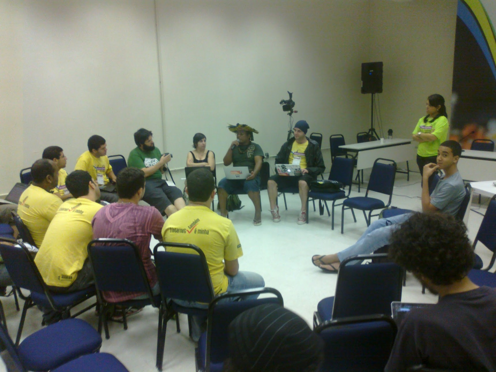

O Segundo Fórum de Internet no Brasil, em Olinda, movimentou a lista entre os dias 3 a 6 de junho de 2012. Da carta de Olinda, em Defesa ao Marco Civil da Internet no Brasil ao encontro com a Rede Mocambos, muitos assuntos surgiram, nem todos foram documentados. Regis fez registros fotográficos e subiu em seu flickr, Marcos Egito compartilhou algumas fotos também (a que segue é de sua autoria).

Perguntamos para algumas pessoas:
O que foi o II Fórum da Internet para você?
E vamos atualizar as respostas por aqui, a medida que elas chegarem :)
Adriano Beisário: O Fórum como evento em si me pareceu extremamente estranho, a começar pelo fato de se assumir como não-deliberativo. Ficava a pergunta: para que tanta discussão então? A trilha que acompanhei "Propriedade intelectual na rede" também já no nome revelava sua insuficiência de entendimento acerca dos livros fluxos da informação e comunicação na Internet. Deixei registrada a sugestão de no próximo evento da trilha se chamar "Cultura Livre na Rede", mas esta não apareceu nos registros finais/relatoria do encontro. Ou seja, para terminar, metodologia de encontro fraca e ultrapassada, sem muita transparência de como eram feitos os encaminhamentos ou sobre o que já havia de acúmulo do I Fórum, por exemplo. Sobre o conteúdo, a trilha que acompanhei ficou muito tempo num debate sem fim a partir de premissas sem sentido, como a de que a "internet está matando os autores e criadores". Impossível não ver um retrocesso dos debates que aconteciam anos atrás. No mais, fora o evento, é sempre uma grande oportunidade de rever parceiros, conhecer novas pessoas e aproximar trabalhos e fluxos com pessoas de longe, que sem estes encontros não teríamos a oportunidade de dialogar ao vivo.
Felipe Cabral: Foi um momento de encontro de várias redes, embora essa frase já pareça um clichê surrado, perverso e sem sentido em dias nos quais dizer que "houve um encontro de redes", talvez seja uma ativo usado como forma de aumentar o valor de mercado de alguns grupos (e de consequente aumento de currículo, projetos e captação de recurso). Mas ainda sobre o Fórum: Olinda foi palco de uma série de debates importantes e de afirmações e presentificações fortes da sociedade civil organizada e de muitos movimentos sociais. Foi quase um Fórum Social da Internet, em alguns momentos. E para terminar com clichês já que eu comecei por eles: nunca dantes na história desse país houve tanta gente explicitando e cobrando mudanças mediante a incoerência, a negligência e a falta de avanço do governo federal quanto as bandeiras do acesso e da democratização do conhecimento há tempos levantadas por quem quer ver acontecendo aqui um novo possível. Saiu essa carta. Pressão. E esse texto excelente do Nelson Pretto.
Regis Bailux: Foi os tambores de mãe Bete de Oxum, no Coco de Umbigada, no encontro da rede Mocambos. Foi a hospitalidade do recifense Isaac, e também foi os nômades metarecxs na rede de afetos.
Issac Filho: O Fórum da Internet foi, antes de tudo, um espaço para rever amig@s que estão remando contra maré, assim como eu. Além de encontrar essas pessoas que são referências pra mim, e também são pessoas amáveis, pude conhecer novas pessoas. Encontros que acontecem no encontro, espaços que surgem no espaço maior, fóruns que acontecem dentro do fórum. Foi assim que me senti, ora sendo bastante útil para resolver problemas alheios ao evento, mas não alheios a mim, ora participando de encontro de redes, onde pude dialogar mais perto e sentir corações e tambores vibrarem e ora ajudando pessoas de militância a apropriar de projetos e programas que foram criados por eles mesmos.

Pegando a parte da palavra